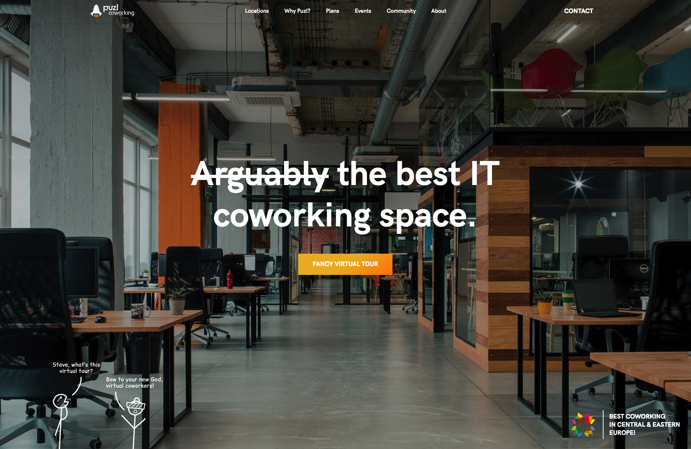
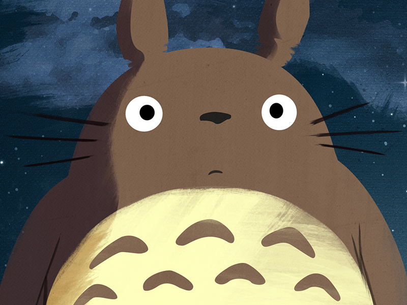
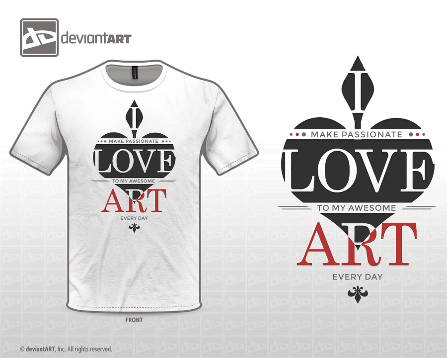
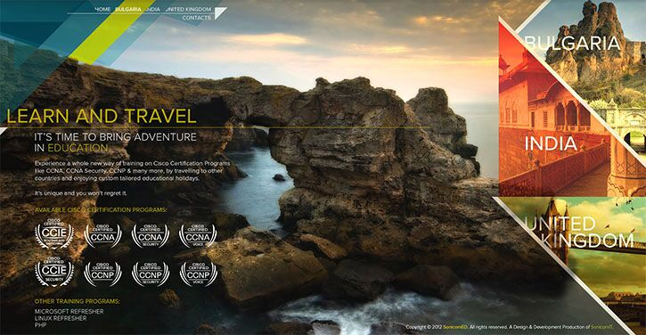
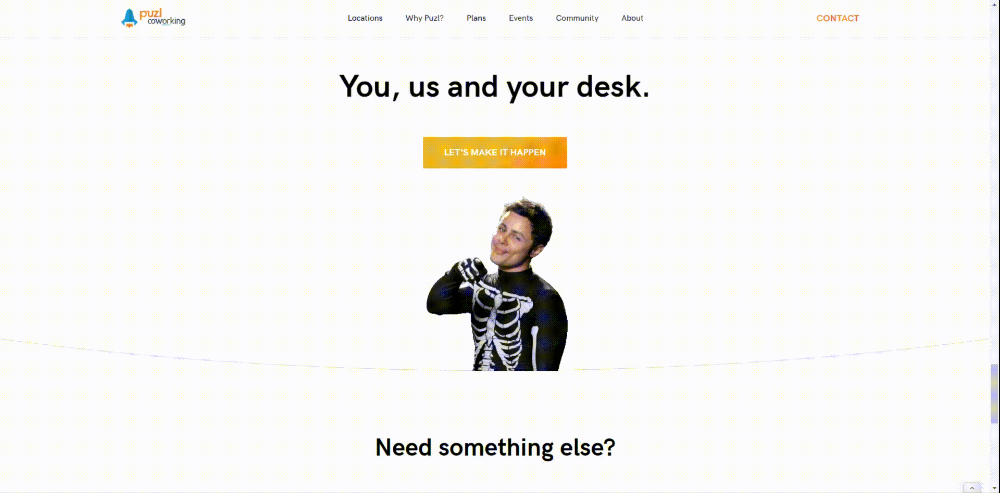

Stefan Vladimirov
Chief Creative at Swipes. Loves order and beauty. Always striving to achieve the balance between function
and aesthetics.

Multidisciplinary Designer
Short intro
My name is Alex. When I meet people they usually tell me I look like d'Artagnan or the white Snoop Dogg. Both of them are pretty awesome (for different reasons), so I guess I got that going on for me, which is nice.
What do you do for a living?
Design. All kinds of it, too. I’ve done everything from brand and print design, through UI/UX for web and mobile, to product and game design. I’ve dabbed into fashion design, too. The only type of design I’ve yet to do is industrial and interior. For the past 3 years, I’ve been mostly focused on doing Puzl CowOrKing (a.k.a. The Best Coworking in CEE) for a living. I spend my time conceptualizing and designing neat web-based apps for our company, as well as whatever other visuals we need. However, the curious part is that due to us being a startup, I’ve had to expand my skill-set beyond just design and I’m now also actively doing product ownership and management, business strategy, copywriting and the occasional sales tour. 😄
The website of Puzl Coworking Space can be seen here here.
When did you find your passion for design?
Two things ignited the passion in me. First, when I was 13 I used to spend a lot of time playing games on my PC. One Sunday my father came home and said to me “Boy, there’s so much more that you can do on a PC than just playing games.” and then he showed me Adobe Photoshop 5.5. I spent the next couple of hours doing what every person who has just discovered Photoshop does - I opened three photos from the Windows XP library and applied every fucking art filter in PS. Artistic Cutout? Check. Sumi-e brush stroke? Check. Glowing edges? Hell yeah. Second, when I was 14 I joined the Private Vocational School for Multimedia Computer Graphic Design & Animation (It sounds even more ridiculous in Bulgarian, trust me), which was amazing as I got to actually learn stuff like Photoshop, Illustrator, 3ds Max and Flash in school. I also had some amazing professionals for teachers, most notably Stefan Tchakarov who introduced me to the wonders of brand design, logomarks and logotypes.
How long have you been doing your craft?
I got my first client project when I was 16, so I guess I’ve been doing design for about 9 years. Heh, almost a decade.
Describe the beginning of your day
have 3 alarms. If they don’t wake me up, my girlfriend takes it upon herself to kick me out of bed. I then proceed to read daily world news and facepalm myself multiple times, while I wait my girlfriend to get ready. We go out together, pass by a small coffee place to grab a latte, an espresso and two croissants (their butter and cheddar one is to die for), and then proceed to play tetris with the rest of the people who are trying to get on the metro.
What’s your workspace?
Well, if there’s one benefit of working for and at a coworking space, it’s that I have more than 6,000 m2 to work from. Basically, I don’t have a desk. I’ve worked from at least 16 different ones and it feels great, because every month or two I just decide to switch up things.
What’s your source of inspiration?
Books. Especially books that are not about design. Also, http://waitbutwhy.com/. Travel as well. Visiting another country/city and exploring its everyday design language is a big one. Going somewhere new and seeing how their street posters look, how they communicate their public transport, how small and medium businesses brand themselves - it’s super exciting. Also, everything Hayao Miyazaki has ever produced.
Large Totoro - Poster Closeup here.
What works are you most proud of?
I’ve been doing this for 9 years. I’ve been proud of different things at different times of my career. When I was 18, I was very proud of this t-shirt design I did for a deviantART contest:
At 20, I was super proud of a website I designed, which won some awards (the front-end dev wanted to slit my throat):
Then I spent a couple of years being proud of work I could never show, because of silly Non-Disclosure Agreements. Now I’m proud of everything we’re doing in Puzl, but mostly of putting silly shit like transparent .GIFs and a whole adventure game on our new website - https://www.puzl.com/quest/stay-awhile-and-listen.
What are the tools you use in your day to day life?
Webflow. Webflow. Webflow. It has changed my life. There is no better tool for doing web/mobile/product design. It’s everything I’ve ever wanted as a UI/UX designer. I still open Photoshop and Illustrator when I need to retouch a photo or quickly edit an .SVG, but this happens maybe two-three times a month, tops.
Do you follow any set of principles for your work?
Make it useable. Make it simple. Aesthetics without ethics is just cosmetics.
What’s your favourite movie?
Anything ever made by Hayao Miyazaki. Also, The Lord of the Rings: The Fellowship of the Ring.
What's your favourite book?
Anything ever written by Guy Gavriel Kay, but mostly The Lions of Al-Rassan.
What advice would you give to people that start out with design?
If you are not designing it for yourself/your business, DO NOT emotionally invest yourself in the design. You’ll only suffer.
Have you ever thought of empowering your creative community in any way, shape or form?
I’ve occasionally helped out Fill & Stroke with their Show & Tell events and Design Battles. I’ve also tried my best to guide young/starting designers, advise them and help them find a place to work where they can grow and their talent will be nurtured.
Meet Alex on the Social Media
DribbbleKnowing you for a long time now has been a pleasure, Alex. Thank you for the geniune interview.